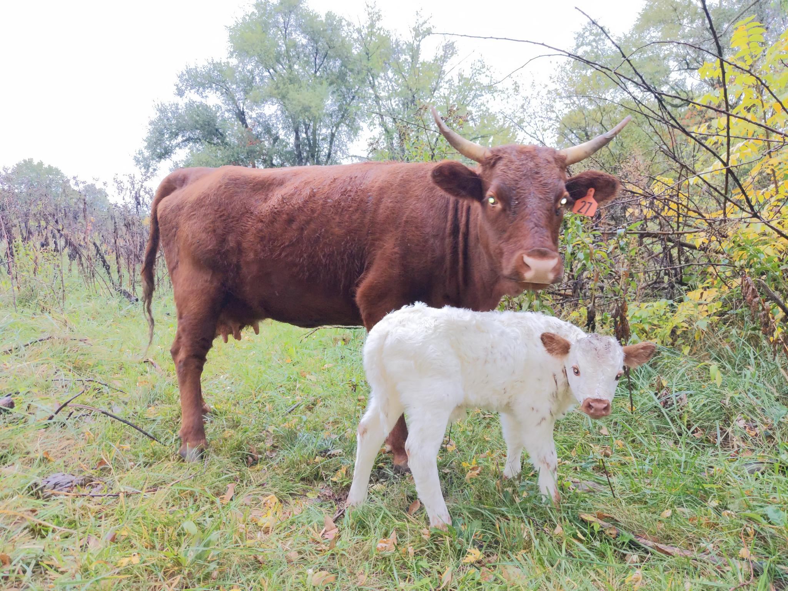

Heritage Grass-Fed Beef
Raised south of Kansas City, MO
Faith. Family. Farming.
Raised south of Kansas City, MO
We’re a small family farm raising heritage breed, grass-fed beef just outside Harrisonville, Missouri. At His Hand Holler, we value stewardship, sustainability, and doing things the old-fashioned way—naturally and with care.
All based on seasonal availability.
Email: holler@a.hall.win
Text: 816-793-0505 for address & visit times
Location: Ore Rd, Harrisonville, MO